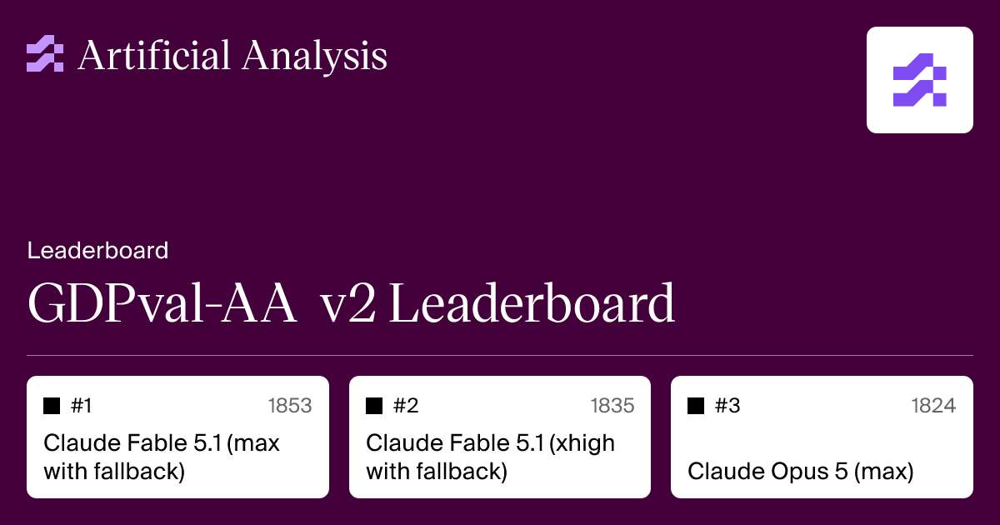

Executive Summary
애프터쿼리(AfterQuery)가 기업가치 32억 달러로 평가받는 라운드를 마감했다고 포브스가 보도했고, 테크크런치가 9월 1일 이를 전했습니다. 지난 4월 시리즈A 때의 평가액이 3억 달러였으니 다섯 달 사이에 열 배가 넘게 뛴 셈입니다. 와이컴비네이터 파트너 구스타프 알스트뢰머는 액셀러레이터 역사상 창업에서 유니콘까지 가장 짧은 기록이라고 말했습니다. 이 회사가 파는 물건의 정의부터 봐야 그 속도가 무엇의 값인지 보입니다.
애프터쿼리는 정답을 모아 팔지 않습니다. 회사 소개 문구로는 세계 최고 실무자의 패턴과 결정과 추론을 부호화한 것을 팔고, 그 일을 실제 의사와 변호사가 합니다. 상품이 절차로 옮겨 가면 검수의 대상도 함께 옮겨 갑니다. 오픈AI가 실무 벤치마크 GDPval의 공개 과제 220개를 같은 직종 전문가에게 채점시켜 봤더니, 두 사람이 어느 쪽 결과물이 나은지에 대해 71%만 같은 답을 냈습니다. 나머지 29%는 무엇이 더 나은 결과물인지가 같은 분야 전문가 사이에서도 갈린다는 뜻입니다.
1절과 2절은 보도와 회사가 공개한 자료로 확인한 사실입니다. 3절부터는 그 사실을 데이터 품질의 눈으로 읽은 대목이라는 점을 미리 밝혀 둡니다. 애프터쿼리가 무언가를 잘못하고 있다는 이야기가 아닙니다. 절차를 데이터로 만드는 회사가 이만한 속도로 커질 때 그 절차가 옳았다는 증거는 어디에 남는지, 그것을 묻고 싶을 뿐입니다.
주요 수치
출처: TechCrunch(2026-09-01), 오픈AI GDPval 방법론, METR(2026-03)
3억→32억
다섯 달 사이 기업가치(달러)
4월 시리즈A는 3억 달러, 9월 라운드는 포브스 보도 기준입니다
71%
전문가 두 사람의 판정 일치율
공개된 220개 과제를 같은 직종 전문가끼리 채점했을 때의 값입니다
24%p
자동채점과 사람 판정의 격차
사람이 실제로 병합한 패치를 기준선으로 맞춘 뒤 잰 값입니다
1,320개
GDPval 과제 수
평균 14년 경력 현업 전문가의 실제 업무에서 뽑았습니다
애프터쿼리가 파는 물건
회사는 와이컴비네이터 2025년 겨울 코호트를 거쳤습니다. 테크크런치의 표현으로 18개월 전입니다. 창업자 두 사람은 지금 22세와 23세이고, 스펜서 마티가가 대표, 카를로스 게오르게스쿠가 기술 총괄입니다. 4월에는 알토스벤처스가 이끈 시리즈A로 3천만 달러를 3억 달러 가치에 받았고, 그 시점에 이미 연환산매출 1억 달러를 넘겼다고 밝혔습니다. 9월 라운드의 리드 투자자와 조건은 아직 공개되지 않았고, 테크크런치는 회사 측 확인을 받지 못했다고 적었습니다.
고객으로 이름이 나온 곳은 엔비디아, 법률 AI 회사 레고라(Legora), 그리고 한국의 AI 랩 모티프 테크놀로지스입니다. 엔비디아가 공개한 네모트론 3 울트라 기술보고서는 이름을 밝힌 유일한 데이터 파트너로 애프터쿼리를 인용했습니다. MIT 라이선스로 공개된 모티프 3의 경우에는 애프터쿼리가 자사 블로그에서 유일한 데이터 파트너였다고 밝혔습니다.
회사 홈페이지의 첫 문장은 기계에게 전문가의 사고방식을 가르친다는 선언입니다. 파는 물건은 네 갈래로 나뉩니다. 프롬프트와 응답 쌍에 사고 과정을 함께 붙인 지도학습 데이터, 전문가가 설계한 문제와 채점 기준을 묶은 강화학습용 루브릭, 에이전트를 실제 업무 흐름 안에서 학습시키고 평가하는 환경, 그리고 사람이 브라우저와 데스크톱에서 일하는 궤적을 그대로 기록한 데이터입니다. 회사의 진단은 웹이 결과물만 남기고 과정은 버린다는 것입니다. 깃허브에는 최종 코드가 남지만 그 앞의 세 시간짜리 원인 추적은 남지 않고, 진료 기록에는 진단명이 남지만 배제된 감별 진단은 남지 않습니다. 네 갈래가 담으려는 것이 그 버려진 쪽입니다.
두 번째 갈래에 이 회사의 사업이 압축돼 있습니다. 애프터쿼리는 루브릭 상품을 두고 주관적 판단을 확장 가능한 보상 신호로 바꾸는 일이라고 설명합니다. 정답표가 없는 판단에도 점수를 매기려면 기준부터 있어야 하고, 회사는 그 기준을 만들어 팝니다. 모델은 그 기준으로 보상을 받으며 학습합니다. 기준이 틀리면 모델은 틀린 방향으로 성실하게 최적화됩니다. 회사가 제품 소개에서 루브릭의 적용 범위로 적어 둔 것은 추론과 코드 생성이지만, 뒤에서 보듯 실제로 만든 채점 기준은 법률 실무까지 들어가 있습니다.
라벨링이 값싸지고, 값은 판단으로 옮겨 갔다
시장이 왜 지금 절차에 값을 매기는지는 딥시크가 남긴 기록에 단서가 있습니다. R1은 답을 대조할 수 있는 수학 과제에서 강화학습으로 큰 폭의 개선을 얻었지만, 기술보고서의 한계 항목에는 소프트웨어 엔지니어링 벤치마크에서 이전 모델 대비 큰 개선을 보이지 못했다고 적혀 있습니다. 보고서가 밝힌 이유는 평가에 시간이 오래 걸려 강화학습 과정의 효율이 떨어졌고, 그래서 대규모 강화학습을 소프트웨어 과제에 널리 적용하지 못했다는 것입니다. 애프터쿼리는 이 대목을 검증기 비용의 문제로 읽습니다. 수학에는 답과 대조하기만 하면 몇 분 안에 신호가 돌아오는 값싼 검증기가 있지만, 소프트웨어에서는 무엇이 맞는 동작인지 판정할 테스트 스위트를 그 동작을 아는 사람이 먼저 설계해야 하고, 그 테스트가 의도한 동작을 놓치면 보상 신호 자체가 틀린다는 것입니다.
긴 작업일수록 사람이 남는다는 관찰도 이미 나와 있습니다. METR이 2024년 11월에 머신러닝 연구 엔지니어링 환경 일곱 개를 만들고, 전문가 61명이 여덟 시간짜리로 시도한 71회를 프런티어 에이전트와 견줬습니다. 환경당 2시간 예산에서는 가장 잘한 에이전트가 인간 전문가의 네 배 점수를 냈습니다. 8시간에서 사람이 근소하게 앞질렀고, 32시간에서는 사람이 최고 성적의 에이전트보다 두 배 높은 점수를 받았습니다. 에이전트는 시도할 아이디어가 떨어졌고, 잘못 든 경로에서 빠져나오지 못했습니다. 다만 같은 연구는 어떤 에이전트가 인간 전문가 누구보다 빠른 커널을 짰다는 사실도 함께 적었습니다. 사람이 모든 자리에서 이기지는 않습니다.
값은 그 관찰을 따라 움직였습니다. 메타는 2025년 6월 스케일AI 지분 49%를 143억 달러에 사들였습니다. 애프터쿼리가 자사 지식페이지에 모아 둔 나머지 신호는 이렇습니다. 서지AI는 2025년 중 250억 달러 규모의 평가를 논의했다고 보도됐고, 머코어는 2025년 10월 100억 달러 가치를 인정받았는데 계약자 평균 시급이 85달러, 의사는 200달러 안팎입니다. 메카나이즈는 강화학습 환경을 설계할 엔지니어에게 연봉 50만 달러를 제시했다고 전해집니다. 데이터를 붙이는 손이 아니라 무엇을 잘한 것으로 칠지 정하는 사람에게 값이 붙었습니다.
이 시장의 노동 쪽 구조는 페블러스가 지난 7월 전문가 데이터 노동시장 리포트에서 따로 다뤘습니다. 그 글의 물음이 누가 전문가를 고르는가였다면, 이 글의 물음은 그 전문가가 만든 절차를 무엇이 채점하는가입니다.
검수자의 자격이 먼저 바뀐다
오픈AI가 코드 비평 모델 크리틱GPT를 만들 때 쓴 데이터 수집 방식이 이 문제를 그대로 보여 줍니다. 사람이 자연히 잡아낸 버그도 데이터로 썼지만, 논문의 표현으로 그런 버그는 더 자연스러운 대신 사람이 찾기 쉬운 편이었습니다. 그래서 연구팀은 계약자에게 돈을 주고 코드에 미묘한 버그를 심게 한 뒤, 그것을 코드 리뷰에서 찾아낸 것처럼 설명을 쓰게 했습니다. 심는 과정도 적대적이었습니다. 계약자는 비평 모델을 직접 돌려 보며 세 번 중 최소 한 번은 그 모델이 놓치는 버그만 남겼습니다. 논문은 그렇게 심은 버그의 분포가 실제 모델이 내는 오류의 분포와 상당히 다르다고 스스로 적어 두었습니다. 미묘한 오류를 충분히 모으려면 미묘한 오류를 지어내는 수밖에 없었던 것입니다.
오픈AI는 같은 어려움이 코드 바깥에서도 커진다고 적었습니다. 추론과 모델 거동이 나아질수록 챗GPT는 더 정확해지고 남는 실수는 더 미묘해져서, 평가를 맡은 사람이 그 부정확함을 짚어내기 어려워지고 RLHF를 떠받치는 비교 과제 자체가 훨씬 어려워진다는 것입니다. 논문은 이를 RLHF의 근본적 한계라고 못박습니다. 모델이 더 유능해지면 노련한 전문가조차 그 결과물의 품질이나 정확성을 믿을 만하게 판정하지 못하는 지점에 곧 도달한다고 적었습니다. 애프터쿼리는 이 지점을 검증 상한선이라고 부릅니다. 채점자는 좋은 결과물과 그럴듯한 오답을 가를 수 있어야 하는데, 최전선 과제에서는 그 구분 자체가 그 일을 직접 할 수 있는 사람에게만 남습니다. 검수를 원 작업자보다 값싼 사람에게 맡기는 구조는 이 지점에서 작동을 멈춥니다.
오픈AI가 그 상한선 앞에서 고른 답은 사람을 더 뽑는 것이 아니었습니다. 비평을 쓰는 모델을 붙였습니다. 논문의 결론은 사람과 모델을 한 팀으로 묶으면 모델 혼자일 때만큼 버그를 잡으면서 없는 버그를 지어내는 일은 줄어든다는 것이었습니다. 검수의 해법은 더 나은 검수자가 아니라 검수자의 구성 변경이었습니다. 4절에서 볼 채점 구조는 그 방향으로 한 걸음 더 갑니다.
아는 것과 할 수 있는 것이 다르다는 증거도 함께 나와 있습니다. 프런티어 모델 포럼의 자금으로 액티브사이트가 진행하고 2026년 2월에 결과를 낸 실험에서, 실험실 경험이 거의 없는 153명에게 여덟 주 동안 분자생물학 과제를 시키고 절반에게는 2025년 중반의 프런티어 모델을 함께 쓰게 했습니다. 사전 예측은 AI를 쓴 쪽이 27%, 인터넷만 쓴 쪽이 12% 성공이었습니다. 실제 결과는 바이러스를 만들려면 모두 통과해야 하는 세 과제를 전부 끝낸 비율이 인터넷만 쓴 쪽 6.6%, AI를 쓴 쪽 5.2%였습니다. 여기서 한 가지는 분명히 해 두어야 합니다. 연구진은 이 차이가 통계적으로 유의하지 않다고 밝혔고, 개별 단계 17개 가운데 16개에서는 오히려 AI를 쓴 쪽이 더 나았습니다. 그러니 AI가 방해했다고 읽을 일은 아닙니다. 끝까지 해내는 능력에서 측정할 만한 도움이 되지 않았다는 것까지가 이 실험이 말하는 범위입니다.
같은 시기 시험지 위의 결과는 정반대였습니다. 시큐어바이오 등이 만든 바이러스학 역량 시험은 실험실 프로토콜을 어떻게 손볼지 묻는 322문항으로 구성돼 있습니다. 전문가에게는 각자 전공 영역에 맞춘 10~30문항을 주고 인터넷 사용도 허용했는데 평균 정답률이 22.1%였습니다. o3는 같은 문항에서 43.8%를 기록했고, 전문가 94%보다 높은 점수를 냈습니다. 무엇을 아는지 묻는 자리에서는 모델이 이기고, 그 앎으로 무엇을 해내는지 묻는 자리에서는 사람이 남습니다. 액티브사이트는 운전 교본을 외운 것과 실제로 운전하는 것의 차이라고 적었습니다.
그 절차는 무엇이 채점하는가
절차 데이터가 실제로 어떻게 채점되는지는 GDPval에서 볼 수 있습니다. 오픈AI가 만든 이 실무 벤치마크는 미국 국내총생산 기여가 큰 9개 섹터의 44개 직종에서 1,320개 과제를 모았고, 그 가운데 220개를 공개했습니다. 과제는 평균 14년 경력의 현업 전문가가 실제로 하는 업무에서 뽑았습니다. 애프터쿼리가 엔비디아 네모트론 3 울트라에 공급한 데이터의 평가 기준도 이 벤치마크입니다. 기술보고서에 적힌 점수는 워밍업 전 35.3에서 워밍업 후 46.7로 올랐고, 교사 모델은 49.5였습니다.
채점을 누가 하느냐가 이 벤치마크의 어려운 대목입니다. 오픈AI는 공개한 220개 골드 세트에 한해 사람과 모델의 결과물을 같은 직종 전문가에게 블라인드로 비교하게 했는데, 비교 한 건에 한 시간 넘게 걸렸습니다. 그렇게 얻은 인간 채점의 평가자간 일치율이 71%입니다. 오픈AI는 이 채점을 흉내 내는 자동 채점기를 훈련해 66% 일치율을 얻었고, 사람보다 빠르고 싸지만 전문가 채점을 대체하는 용도로는 쓰지 않는다고 밝혔습니다. 독립 평가기관 아티피셜애널리시스가 그 220개로 운영하는 GDPval-AA는 2판에서 프런티어 LLM 세 대로 구성한 심사단이 블라인드로 두 결과물을 비교하고, 그 결과를 브래들리테리 모델로 환산해 일로(Elo) 점수로 내놓습니다. 인간 전문가의 결과물이 1,000이 되도록 눈금을 다시 맞춘 점수입니다.
아티피셜애널리시스가 1판에서 2판으로 넘어오며 바꾼 것을 스스로 정리해 둔 목록에 이 글의 관심사가 그대로 있습니다. 단일 심사자를 세 대 패널로 교체했고, 일로 눈금을 인간 전문가 수준에 다시 맞췄습니다. 심사단은 GPT-5.5와 제미나이 3.1 프로, 클로드 오퍼스 4.8이고 비교마다 그중 하나가 뽑힙니다. 그리고 이 점수는 관전용이 아닙니다. GDPval-AA 2판은 이 기관의 지능 지수에서 단일 평가로는 가장 큰 20% 비중을 차지합니다. 어느 모델이 더 낫다는 시장의 판정에 가장 크게 기여하는 한 표를, 지금은 모델 세 대가 나눠 쥐고 있습니다.

과제를 만든 쪽은 평균 14년 경력의 사람이고, 그 답을 채점하는 쪽은 사람과 다른 종류의 심사자입니다. 검수자가 원 작업자보다 전문성이 낮아지는 정도의 문제가 아니라, 채점의 주체가 아예 다른 것으로 바뀌는 중입니다.
법률 쪽에서는 그 어려움이 회사 자신의 기록에 남았습니다. 애프터쿼리는 레고라와 함께 5,161건의 사건과 11,075개 소스 문서로 28개 실무분야를 덮는 법률 에이전트 벤치마크를 만들었습니다. 회사는 이 작업을 소개하면서 실패 사례를 레고라 팀에 넘겼고, 그 팀의 피드백이 의미 있는 법률 오류와 합리적인 판단 차이를 가르는 데 도움이 됐다고 적었습니다. 무엇이 틀린 답이고 무엇이 견해 차이인지를 정하는 데 또 한 겹의 전문성이 들었다는 말입니다. 정답 일치율만으로는 절차의 타당성이 재지지 않는다는 것을, 그 데이터를 만든 회사가 자기 언어로 확인해 주었습니다.
같은 글에서 회사는 그 과정에서 나온 판단이 소스 자료와 기대 산출물만이 아니라 루브릭과 심사자까지 고쳤고, 양쪽 팀이 이 벤치마크가 레고라가 기대하는 업무를 반영한다고 확신할 때까지 그 수정을 반복했다고 적었습니다. 무엇이 좋은 답인지에 대한 기준과, 그 기준을 적용할 심사자가 같은 고리 안에서 함께 조정된 것입니다. 그렇게 만들어진 벤치마크는 비공개이고, 밖으로 나온 것은 공동 제작한 합성 사건 하나뿐입니다. 절차가 옳았다는 증거는 지금 대체로 이런 자리에 있습니다.
벤치마크가 무엇을 재는지는 채점 방식이 정합니다. 전문가 사이에 29%의 불일치가 있는 영역에서, 그 불일치를 그대로 안은 채 채점을 모델 심사단에 넘기면 점수는 매끄럽게 나옵니다. 매끄러운 점수가 절차의 타당성을 보증하지는 않습니다. 무엇을 재고 있는지는 그대로인데 재는 도구만 빨라진 상태이기 때문입니다.
절차가 옳았다는 증거
코드는 검증이 가장 쉬운 영역입니다. 테스트가 통과하면 통과한 것이고, 애프터쿼리도 터미널벤치 파이프라인에서 gpt-oss-20b의 성적을 3.1%에서 17.0%로 끌어올린 사례를 공개했는데, 코드 도메인에서는 테스트 스위트가 곧 검증 도구 노릇을 합니다. 다만 그 쉬운 영역에서도 채점 규칙은 그냥 주어지지 않았습니다. 공식 평가는 과제 단위로 통과와 실패만 매기는데 그 신호가 너무 성기다고 보고, 회사는 개별 테스트의 통과 비율을 보상으로 다시 설계했습니다. 열 개 중 세 개를 통과한 시도와 일곱 개를 통과한 시도가 둘 다 0점이 되지 않게 하려는 조정입니다. 무엇을 잘한 것으로 칠지는 여기서도 사람이 정했습니다.
검증이 쉬운 그 영역에서도 자동채점과 사람의 판정은 갈립니다. METR이 2026년 3월에 내놓은 연구가 그 간격을 수치로 보여 줍니다. 사이킷런과 스핑크스, 파이테스트의 현직 메인테이너 네 명이 SWE-bench Verified 자동채점을 통과한 AI 패치 296건을 놓고 실제로 병합할지 판단했습니다. 요약 문장은 이렇습니다. 테스트를 통과한 패치의 대략 절반이 병합되지 않았습니다. 메인테이너의 판정은 자동채점 점수보다 평균 24%p 낮았습니다.

반려 사유는 코드 스타일이나 저장소 관행을 따르지 않은 품질 문제, 무관한 코드를 건드려 다른 곳을 망가뜨린 경우, 분류되지 않은 나머지, 그리고 애초에 이슈를 제대로 해결하지 못한 핵심 기능 실패의 네 갈래로 분류됐습니다. 마지막 항목은 테스트를 통과했는데도 문제를 풀지 못했다고 판정된 패치가 있었다는 뜻이고, 연구진은 클로드 3.5에서 3.7로 넘어갈 때 이 유형의 지적이 오히려 늘었다고 적었습니다. 자동채점은 기능이 되는지조차 늘 맞히지는 못합니다. 같은 격차를 시간으로 환산하면 이렇습니다. 클로드 4.5 소네트는 자동채점 기준으로는 50분짜리 과제를 푸는 모델이지만 메인테이너 기준으로는 8분짜리였습니다. 약 일곱 배의 과대평가이고, 연구진은 이것을 시간 환산 분석에서 가장 견고한 결과라고 적었습니다.
이 연구는 자기 결과를 어떻게 읽지 말아야 하는지도 함께 적어 두었습니다. 에이전트는 피드백을 받아 고쳐 낼 기회 없이 한 번에 제출했으므로 이것을 모델의 근본적 한계로 읽지 말라고 했습니다. 눈금 자체가 흔들린다는 사실도 스스로 공개했습니다. 이미 병합된 적 있는 사람의 원본 패치를 같은 메인테이너에게 다시 보였더니 68%만 병합 판정을 받았습니다. 사람의 채점에도 그만한 폭이 있다는 것을 인정하고, 모든 점수를 그 68%에 맞춰 눈금을 다시 잡은 뒤 나온 값이 24%p입니다. 그리고 METR은 같은 교훈이 사람의 업무 맥락에서 해석되는 다른 벤치마크에도 적용될 것으로 본다며 GDPval-AA를 이름으로 지목했습니다. 4절에서 본 그 채점 구조입니다.
검증이 가장 쉬운 영역에서도 이만큼이 테스트 바깥에 남는다면, 테스트가 아예 없는 진료 계획이나 사건 전략에서는 무엇이 그 자리를 대신하는지 물어야 합니다. 절차 데이터의 값이 오르는 만큼 그 절차가 옳았다는 증거의 값도 함께 올라야 정상입니다. 아래 세 가지는 보도된 내용이 아니라, 같은 종류의 데이터를 만들거나 사들이는 조직이 스스로에게 물어볼 만한 형태로 옮긴 것입니다.
- 우리 데이터에는 결론이 남습니까, 경로가 남습니까. 경로가 남지 않으면 나중에 결과가 틀렸을 때 어디서 갈라졌는지 되짚을 수 없습니다.
- 채점 기준을 누가 썼고, 그 기준이 틀렸다는 것을 우리는 무엇으로 알게 됩니까. 기준의 저자와 검토자가 기록에 없으면 보상 신호의 출처를 추적할 수 없습니다.
- 채점자와 작업자의 전문성 차이가 데이터에 기록됩니까. 누가 만들고 누가 승인했는지가 남아야 나중에 어느 층에서 오차가 들어왔는지 가릅니다.
Editor's Note
페블러스가 데이터 품질을 진단할 때도 결국 같은 자리에서 막힙니다. 값이 맞는지는 비교적 쉽게 재지지만, 그 값이 어떤 절차를 거쳐 그렇게 정해졌는지가 남아 있지 않으면 품질을 보증할 근거가 사라집니다. 절차가 상품이 된 시장에서는 그 기록이 곧 자산입니다.
참고문헌
학술 논문
- 1.Patwardhan, T. et al. (2025). "GDPval: Evaluating AI Model Performance on Real-World Economically Valuable Tasks." arXiv preprint.
- 2.McAleese, N. et al. (2024). "LLM Critics Help Catch LLM Bugs." arXiv preprint.
- 3.DeepSeek-AI. (2025). "DeepSeek-R1: Incentivizing Reasoning Capability in LLMs via Reinforcement Learning." arXiv preprint.
- 4.Wijk, H. et al. (2024). "RE-Bench: Evaluating Frontier AI R&D Capabilities of Language Model Agents Against Human Experts." arXiv preprint (METR).
연구기관·업계 공식 자료
- 5.Whitfill, P. et al. (2026). "Many SWE-bench-Passing PRs Would Not Be Merged into Main." METR.
- 6.Active Site. (2026). "Field Conditions: Does Frontier AI Enhance Novices in Molecular Biology?." Frontier Model Forum 지원.
- 7.Artificial Analysis. "Intelligence Benchmarking — GDPval-AA v2 Methodology."
- 8.AfterQuery. (2026). "Expert Data as the Bottleneck in AI Training." AfterQuery Knowledge Base.
- 9.AfterQuery. (2026). "Building a Frontier Legal Evaluation in Partnership with Legora." AfterQuery Blog.
- 10.AfterQuery. (2026). "How AfterQuery Helped NVIDIA Hill-Climb GDPval." AfterQuery Blog.
- 11.AfterQuery. (2026). "How We Improved Terminal-Bench 2.0 Scores by Over 5x Using Tinker and Harbor." AfterQuery Blog.
- 12.AfterQuery. (2026). "AfterQuery Celebrates the Release of Motif 3 and Served as Sole Data Partner." AfterQuery Blog.
보도
- 13.Bort, J. (2026). "AfterQuery Reportedly Becomes Y Combinator's Fastest-Ever Unicorn, Now Valued at $3.2B." TechCrunch.
- 14.Business Wire. (2026). "AfterQuery Raises $30 Million Series A Round at $300 Million Valuation." Business Wire.